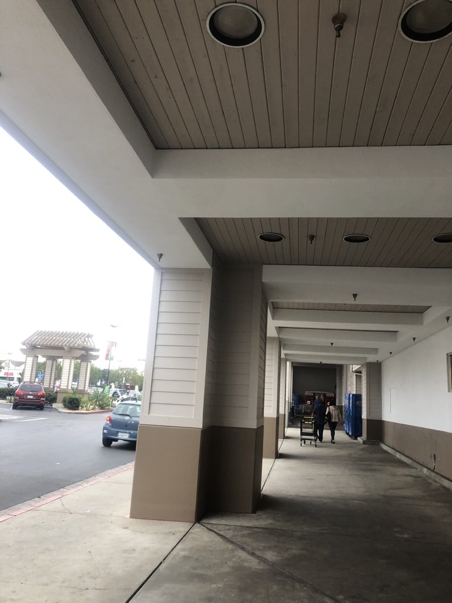
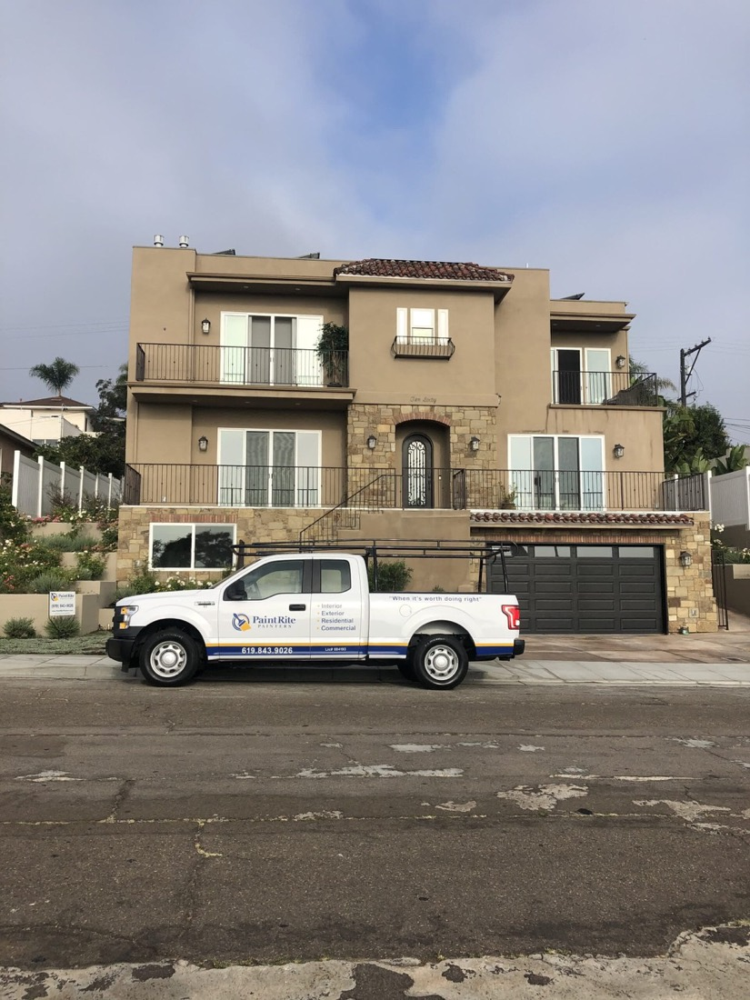
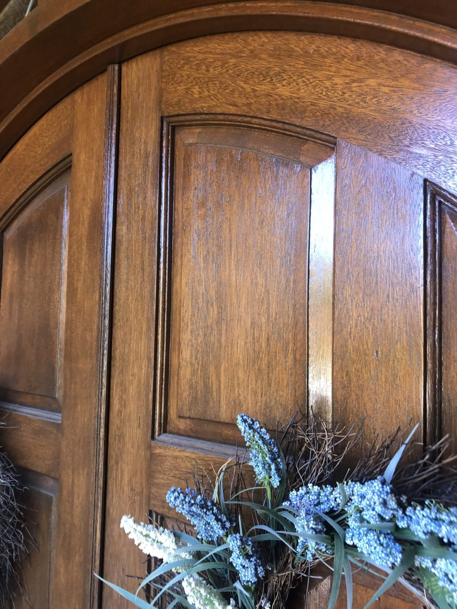

Our residential painting services are crafted to meet the distinct needs and aspirations of homeowners — from interior revitalization to comprehensive renovations and cabinetry work.

We specialize in interior painting services tailored to the unique needs and desires of homeowners like yourself. Whether you're refreshing a single room, conducting a full-scale renovation, or enhancing your cabinetry, we bring precision and premium materials to the work.
We specialize in exterior painting services designed to enhance and protect your home's outer beauty. Whether you're restoring curb appeal or refreshing a tired facade, we use durable finishes that stand up to the elements.
San Diego weather is deceptively tough on a house — relentless sun on the south face, salt air near the coast, and dry heat inland. We spec the coating to the exposure, not to the invoice.


At PaintRite Painting, no one can do custom stain-work quite like us. Our team handles hardwood floors and outdoor furniture restoration with artisan-level craftsmanship — matching tone, respecting the grain, and finishing with a durability that holds up to real life.
We collaborate closely with homeowners to ensure a seamless and stress-free process, using premium paints and materials with attention to detail at every stage.
We talk through your vision and help you land on colors you'll still love in five years — with samples on your walls, in your light.
Furniture covered, floors masked, surfaces washed, patched, sanded, and primed. This is where a lasting finish is actually decided.
Premium product applied by a skilled crew who cut clean lines, keep a tidy site, and clean up at the end of every day.
We walk it with you, mark anything that isn't right, and touch it up until you're genuinely happy. Then we're out of your hair.
Free estimates for homeowners across San Diego County.